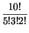

Permutaciones de un ConjuntoUna permutación de los elementos de un conjunto es un ordenamiento lineal de sus elementos, por ejemplo si A = {a1, a2, a3} entonces las permutaciones de A son las siguientes:
De manera similar una r -permutación de r elementos de un conjunto es un ordenamiento de r de los elementos del conjunto. Por ejemplo si A = {a1, a2, a3, a4} entonces las 2-permutaciones de A son:
Para determinar el número de r -permutaciones de los elementos en un conjunto con n elementos se puede recurrir a la regla del producto. Esto pues el proceso de elegir r elementos en un orden específico puede reducirse a elegir un primer elemento entre n, luego elegir un segundo elemento entre los n - 1 que quedan , y así hasta elegir el r -ésimo elemento entre los n - r + 1 restantes. Luego por el principio del producto, (2.2), hay n(n - 1)(n - 2)...(n - r + 1) maneras de elegir r elementos en forma ordenada, de un conjunto con n elementos. Esto nos permite establecer el siguiente teorema: Este teorema merece una explicación especial en el caso de que r = 0. El número de 0-permutaciones, es decir arreglos ordenados con ningún elemento se toma como 1. Sólo hay una forma de elegir 0-permutaciones, no eligiendo ningún elemento. Este problema de la permutaciones tiene algunas variantes que se abordan a continuación. Considérese el problema de hacer una r -permutación de elementos dentro de una estructura que no necesariamente es un conjunto, por ejemplo una estructura que contenga elementos pero se admite que los elementos pueden aparecer más de una vez. Por ejemplo analizar cuántos anagramas, reordenamientos de las letras que forman una palabra, se pueden obtener de la palabra ama. Para resolver este tipo de problema lo más práctico es asumir que en realidad todos los elementos son distintos y realizar el conteo según el teorema 5, una vez hecho esto eliminar los casos que se hayan contado de más. Inicialmente ama tiene tres letras pero una es repetida. Podemos asumir que son tres letras: {a1, m, a2} y en ese casos los posibles anagramas son 6:
no obstante, dado que a1 y a2 son en realidad la misma letra, todo anagrama está dos veces, así que el total posible debe dividirse por dos; y quedan tres anagramas. En general la solución de este tipo de problema es así. Si una estructura contiene r elementos repetidos, k1, k2,..., kr veces, respectivamente entonces para calcular el tipo de permutaciones distintas que se pueden construir primero se calcula el número de permutaciones asumiendo que todos los elementos son distintos, es decir (k1 + k2 + ... + kr)! permutaciones. Luego se procede a analizar y excluir los casos repetidos. Un elemento que aparezca kj veces ocupa kj posiciones dentro de la permutación, como se consideró que los kj elementos son diferentes entonces hay kj! posibles acomodos de esos elementos que se contaron como diferentes pero que en realidad corresponden con una única permutación; por lo tanto para eliminar los elementos contados de más producidos por este elemento el número total debe dividirse entre kj!, y así para cada uno de los elementos.
Ejemplo 9
Se van a repartir 3 rosas, 5 dalias y 2 margaritas entre 10 señoras, determine el número de maneras de hacer esta distribución si cada señora debe recibir al menos una flor. Solución Como hay igual número de flores que de señoras cada una recibe una flor, y el problema se reduce a calcular el número de permutaciones posibles. El número de maneras de distribuir estas flores es

= 2520.
Otro tipo de problema de distribución relacionado con permutaciones tiene que ver con los posibles ordenamientos de r elementos que se pueden hacer de un conjunto de n elementos si se admite la repetición, en este caso el asunto se resuelve recurriendo a la regla del producto. El problema se reduce a elegir un elemento para la primera posición, para la segunda hasta llegar a la posición r. Como cada una de estas escogencias puede hacerse de n formas, se tiene el siguiente resultado Este mismo esquema permite resolver la distribución de k objetos distintos en n celdas, donde cada celda puede contener cualquier número de objetos. Esto pues al final de cuentas este problema se reduce a elegir una celda para poner el primer objeto, y luego elegir con posibilidad de repetición otra celda para el segundo y así hasta colocar todos los objetos. Note que los objetos, en este caso no llevan un orden particular en las celdas. Si el orden en el cual se distribuyen los objetos dentro de las celdas debe tenerse en cuenta entonces el total de maneras cambia.
|